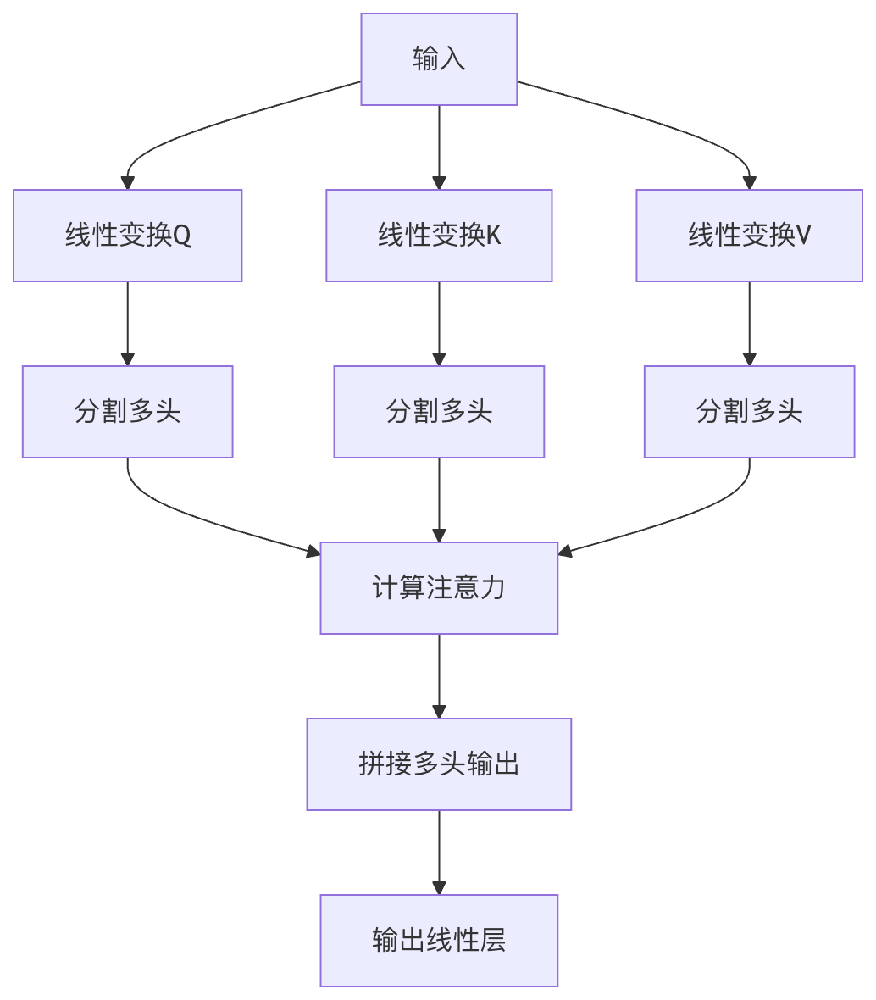

注意力机制
注意力机制(Attention Mechanism)是深度学习中的一种重要技术，它模仿了人类视觉和认知过程中的注意力分配方式。就像你在阅读时会不自觉地将注意力集中在关键词上一样，注意力机制让神经网络能够动态地关注输入数据中最相关的部分。
基本概念
注意力机制的核心思想是：根据输入的不同部分对当前任务的重要性，动态分配不同的权重。这种权重分配不是固定的，而是根据上下文动态计算的。
数学表达
注意力机制通常可以表示为：
Attention(Q, K, V) = softmax(QK^T/√d_k)V
其中：
- Q (Query)：当前需要计算输出的查询项
- K (Key)：用于与查询项匹配的键
- V (Value)：与键对应的实际值
- d_k：键的维度，用于缩放点积结果
为什么需要注意力机制？
- 解决长距离依赖问题：传统RNN难以捕捉远距离词语间的关系
- 并行计算能力：相比RNN的顺序处理，注意力可以并行计算
- 可解释性：注意力权重可以直观展示模型关注的重点
自注意力机制(Self-Attention)
自注意力是注意力机制的一种特殊形式，它允许输入序列中的每个元素都与序列中的所有其他元素建立联系。
工作原理
- 对输入序列中的每个元素，计算其与所有元素的相似度得分
- 使用softmax函数将这些得分转换为权重(0-1之间)
- 用这些权重对对应的值进行加权求和，得到输出
实例
# 简化的自注意力实现示例
import torch
import torch.nn.functional as F
def self_attention(query, key, value):
scores = torch.matmul(query, key.transpose(-2, -1)) / (query.size(-1) ** 0.5)
weights = F.softmax(scores, dim=-1)
return torch.matmul(weights, value)
import torch
import torch.nn.functional as F
def self_attention(query, key, value):
scores = torch.matmul(query, key.transpose(-2, -1)) / (query.size(-1) ** 0.5)
weights = F.softmax(scores, dim=-1)
return torch.matmul(weights, value)
自注意力的优势
- 全局上下文感知：每个位置都能直接访问序列中所有位置的信息
- 位置无关性：不依赖序列顺序，适合处理各种结构化数据
- 高效计算：相比RNN的O(n)复杂度，自注意力可以并行计算
多头注意力(Multi-Head Attention)
多头注意力是自注意力的扩展，它将注意力机制并行执行多次，然后将结果拼接起来。
结构组成
- 多个注意力头：通常使用8个或更多并行的注意力头
- 线性变换层：每个头有自己的Q、K、V变换矩阵
- 拼接和输出：将各头的输出拼接后通过线性层

多头注意力的优势
- 捕捉不同关系：每个头可以学习关注不同方面的关系
- 增强表达能力：比单头注意力有更强的特征提取能力
- 稳定训练：多个头的组合可以减少模型对特定模式的依赖
实例
# 多头注意力实现示例
class MultiHeadAttention(nn.Module):
def __init__(self, d_model, num_heads):
super().__init__()
self.d_model = d_model
self.num_heads = num_heads
self.d_k = d_model // num_heads
self.W_q = nn.Linear(d_model, d_model)
self.W_k = nn.Linear(d_model, d_model)
self.W_v = nn.Linear(d_model, d_model)
self.W_o = nn.Linear(d_model, d_model)
def forward(self, query, key, value):
batch_size = query.size(0)
# 线性变换并分割多头
Q = self.W_q(query).view(batch_size, -1, self.num_heads, self.d_k)
K = self.W_k(key).view(batch_size, -1, self.num_heads, self.d_k)
V = self.W_v(value).view(batch_size, -1, self.num_heads, self.d_k)
# 计算注意力
scores = torch.matmul(Q, K.transpose(-2, -1)) / (self.d_k ** 0.5)
weights = F.softmax(scores, dim=-1)
output = torch.matmul(weights, V)
# 拼接多头并输出
output = output.transpose(1, 2).contiguous().view(batch_size, -1, self.d_model)
return self.W_o(output)
class MultiHeadAttention(nn.Module):
def __init__(self, d_model, num_heads):
super().__init__()
self.d_model = d_model
self.num_heads = num_heads
self.d_k = d_model // num_heads
self.W_q = nn.Linear(d_model, d_model)
self.W_k = nn.Linear(d_model, d_model)
self.W_v = nn.Linear(d_model, d_model)
self.W_o = nn.Linear(d_model, d_model)
def forward(self, query, key, value):
batch_size = query.size(0)
# 线性变换并分割多头
Q = self.W_q(query).view(batch_size, -1, self.num_heads, self.d_k)
K = self.W_k(key).view(batch_size, -1, self.num_heads, self.d_k)
V = self.W_v(value).view(batch_size, -1, self.num_heads, self.d_k)
# 计算注意力
scores = torch.matmul(Q, K.transpose(-2, -1)) / (self.d_k ** 0.5)
weights = F.softmax(scores, dim=-1)
output = torch.matmul(weights, V)
# 拼接多头并输出
output = output.transpose(1, 2).contiguous().view(batch_size, -1, self.d_model)
return self.W_o(output)
注意力机制在NLP中的应用
注意力机制已经成为现代NLP系统的核心组件，特别是在Transformer架构中。
主要应用场景
机器翻译：
- 经典的Seq2Seq with Attention模型
- 允许模型在生成每个目标词时关注源句子中最相关的部分
文本摘要：
- 通过注意力权重识别原文中的关键信息
- 生成式摘要模型使用自注意力捕捉长文档中的全局关系
问答系统：
- 问题与文档间的交叉注意力
- 帮助模型定位问题相关的文本片段
语言模型：
- GPT系列模型使用掩码自注意力
- 允许每个词关注前面的所有词
实际案例：BERT中的注意力
BERT(Bidirectional Encoder Representations from Transformers)是使用注意力机制的典型代表：
- 双向自注意力：同时考虑左右上下文
- 12/24层Transformer：堆叠多头注意力层
- 预训练任务：通过掩码语言模型和下一句预测任务学习通用表示
实例
# 使用HuggingFace Transformers库调用BERT
from transformers import BertModel, BertTokenizer
tokenizer = BertTokenizer.from_pretrained('bert-base-uncased')
model = BertModel.from_pretrained('bert-base-uncased')
inputs = tokenizer("Hello, my dog is cute", return_tensors="pt")
outputs = model(**inputs)
# 获取注意力权重
attention = outputs.attentions # 包含各层的注意力权重
from transformers import BertModel, BertTokenizer
tokenizer = BertTokenizer.from_pretrained('bert-base-uncased')
model = BertModel.from_pretrained('bert-base-uncased')
inputs = tokenizer("Hello, my dog is cute", return_tensors="pt")
outputs = model(**inputs)
# 获取注意力权重
attention = outputs.attentions # 包含各层的注意力权重
注意力机制的变体与扩展
1. 缩放点积注意力(Scaled Dot-Product Attention)
- 引入缩放因子(√d_k)防止softmax饱和
- 计算效率高，适合大规模应用
2. 加法注意力(Additive Attention)
- 使用单层前馈网络计算兼容性函数
- 适用于查询和键维度不同的情况
3. 局部注意力(Local Attention)
- 只关注输入的一个子集，降低计算复杂度
- 平衡了全局注意力和计算效率
4. 稀疏注意力(Sparse Attention)
- 只计算部分位置的注意力权重
- 如Longformer采用的滑动窗口注意力
实践练习
练习1：实现基础注意力机制
实例
import torch
import torch.nn as nn
import torch.nn.functional as F
class SimpleAttention(nn.Module):
def __init__(self, hidden_size):
super(SimpleAttention, self).__init__()
self.attention = nn.Linear(hidden_size, 1)
def forward(self, encoder_outputs):
# encoder_outputs: [batch_size, seq_len, hidden_size]
attention_scores = self.attention(encoder_outputs).squeeze(2) # [batch_size, seq_len]
attention_weights = F.softmax(attention_scores, dim=1)
context_vector = torch.bmm(attention_weights.unsqueeze(1), encoder_outputs) # [batch_size, 1, hidden_size]
return context_vector.squeeze(1), attention_weights
import torch.nn as nn
import torch.nn.functional as F
class SimpleAttention(nn.Module):
def __init__(self, hidden_size):
super(SimpleAttention, self).__init__()
self.attention = nn.Linear(hidden_size, 1)
def forward(self, encoder_outputs):
# encoder_outputs: [batch_size, seq_len, hidden_size]
attention_scores = self.attention(encoder_outputs).squeeze(2) # [batch_size, seq_len]
attention_weights = F.softmax(attention_scores, dim=1)
context_vector = torch.bmm(attention_weights.unsqueeze(1), encoder_outputs) # [batch_size, 1, hidden_size]
return context_vector.squeeze(1), attention_weights
练习2：可视化注意力权重
实例
import matplotlib.pyplot as plt
import seaborn as sns
def plot_attention(attention_weights, source_tokens, target_tokens):
plt.figure(figsize=(10, 8))
sns.heatmap(attention_weights,
xticklabels=source_tokens,
yticklabels=target_tokens,
cmap="YlGnBu")
plt.xlabel("Source Tokens")
plt.ylabel("Target Tokens")
plt.title("Attention Weights Visualization")
plt.show()
# 示例使用
source = ["The", "cat", "sat", "on", "the", "mat"]
target = ["Le", "chat", "s'est", "assis", "sur", "le", "tapis"]
attention = torch.rand(7, 6) # 模拟的注意力权重
plot_attention(attention, source, target)
import seaborn as sns
def plot_attention(attention_weights, source_tokens, target_tokens):
plt.figure(figsize=(10, 8))
sns.heatmap(attention_weights,
xticklabels=source_tokens,
yticklabels=target_tokens,
cmap="YlGnBu")
plt.xlabel("Source Tokens")
plt.ylabel("Target Tokens")
plt.title("Attention Weights Visualization")
plt.show()
# 示例使用
source = ["The", "cat", "sat", "on", "the", "mat"]
target = ["Le", "chat", "s'est", "assis", "sur", "le", "tapis"]
attention = torch.rand(7, 6) # 模拟的注意力权重
plot_attention(attention, source, target)
总结与进阶学习
注意力机制已经成为现代深度学习的基石技术，特别是在NLP领域。要深入学习：
阅读原始论文：
- "Attention Is All You Need" (Vaswani et al., 2017)
- "Neural Machine Translation by Jointly Learning to Align and Translate" (Bahdanau et al., 2015)
实践项目建议：
- 实现一个完整的Transformer模型
- 使用注意力机制改进现有模型
- 分析不同注意力变体对性能的影响
扩展应用领域：
- 计算机视觉中的视觉注意力
- 多模态学习中的跨模态注意力
- 图神经网络中的图注意力机制
注意力机制的发展仍在继续，理解其核心原理将帮助你更好地掌握现代深度学习技术。

点我分享笔记